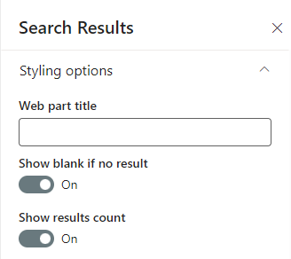

PnP Modern Search V3 usage scanner
Summary
Unfortunaly the Modern Search V3 web parts are not automatically upgraded to V4. This script will scan your tenant for Modern Search V3 web parts and output a CSV file with the results.
This script is based on an idea and a script from Marc Anderson, which can be found here: https://sympmarc.com/2021/04/06/upgrading-the-pnp-modern-search-web-parts-from-v3-to-v4-where-are-they/

Connect to SharePoint Online using any of the options, even Username + keyword might work, if you do not have MFA enabled.
# ModernSearchWebPartsUpgradev3tov4.ps1 - Inventory PnP Modern Search Web Parts usage to upgrade from v3 to v4
# Connect to your tenant here. This should be the only change you need to make to use this script.
#I use an App Reg here as I can assign the Application permission "Sites.Read.All" (SharePoint section) in the app formerly known as Azure AD.
#This script doesn't any further permissions and thus shouldn't have any further permissions.:-)
$clientId = "clientSecret"
$clientSecret = "clientSecret"
$Url = "AnySiteUrl"
$encoding = "UTF8" #could be replaced with the output looks funny, UTF8BOM for scandinavian characters
Connect-PnPOnline -Url $portalUrl -ClientId $clientId -ClientSecret $clientSecret -WarningAction Ignore
#If you want to use the interactive login, use this instead:
#Connect-PnPOnline -Url $SharePointAdminSiteURL -UseWebLogin
#OR
#Connect-PnPOnline -Url $SharePointAdminSiteURL -Interactive
# You can get the Ids for the v3 Web Parts by adding them to a page and running:
# Get-PnPClientSideComponent -Page "page-name" | Where-Object { Title -ne $null } | Select-Object Title, WebPartId
# Title WebPartId
# ----- ---------
# Search Filters e899ac12-9256-4c8d-a8ad-dbd20fc459c3
# Search Box 096b96cc-8a44-41fa-9b4d-c0ab2ab2a779
# Search Verticals 9d441773-f735-46a3-9ca0-9e2eb4bef203
# Search Results 42ad2740-3c60-49cf-971a-c44e33511b93
#$findAllWebPartsquery = 'SPFxExtensionJson:"e899ac12-9256-4c8d-a8ad-dbd20fc459c3" OR SPFxExtensionJson:"096b96cc-8a44-41fa-9b4d-c0ab2ab2a779" OR SPFxExtensionJson:"9d441773-f735-46a3-9ca0-9e2eb4bef203" OR SPFxExtensionJson:"9d441773-f735-46a3-9ca0-9e2eb4bef203" OR SPFxExtensionJson:"42ad2740-3c60-49cf-971a-c44e33511b93"'
$query = 'SPFxExtensionJson:"42ad2740-3c60-49cf-971a-c44e33511b93"'
$pages = Submit-PnPSearchQuery -Query $query -All -RelevantResults -ErrorAction SilentlyContinue -SelectProperties LinkOfficeChild,SPWebUrl,OriginalPath, Filename
$outputarray = @()
foreach($page in $pages)
{
#get the URL of the site
$siteUrl = $page.SPWebUrl
#
if($page.OriginalPath -ne "")
{
$pageUrl = $page.OriginalPath
}
else
{
#it seems like sometimes the OriginalPath is empty, so we need to get the page name from the filename and the library from the LinkOfficeChild
$LinkOfficeChild = $page.LinkOfficeChild
if($LinkOfficeChild)
{
$listId = $LinkOfficeChild.Substring($LinkOfficeChild.IndexOf("listid=")+8 )
$listId = $listId.Substring(0, $listId.IndexOf("}"))
$listQuery = "SPSiteURL:$siteUrl* AND ListId:$listId"
$listInfo = Submit-PnPSearchQuery -Query $listQuery -All -RelevantResults -ErrorAction SilentlyContinue -SelectProperties Title,SiteId,WebId,WebTemplate,WebTemplateId,WebUrl, ListUrl
$pageUrl = $listInfo.ListUrl
}
else
{
$listInfo = "unknown"
}
}
#the page name
$pageName = $page.FileName
$outputarray+= [PSCustomObject]@{
"PageName" = $pageName
"LibraryUrl" = $pageUrl
"SiteUrl" = $siteUrl
}
}
$outputarray | Export-Csv -Path "C:\temp\ModernSearchWebParts.csv" -NoTypeInformation -Delimiter "|" -Encoding $encoding
Check out the PnP PowerShell to learn more at: https://aka.ms/pnp/powershell
Contributors
| Author(s) |
|---|
| Kasper Larsen |
Disclaimer
THESE SAMPLES ARE PROVIDED AS IS WITHOUT WARRANTY OF ANY KIND, EITHER EXPRESS OR IMPLIED, INCLUDING ANY IMPLIED WARRANTIES OF FITNESS FOR A PARTICULAR PURPOSE, MERCHANTABILITY, OR NON-INFRINGEMENT.